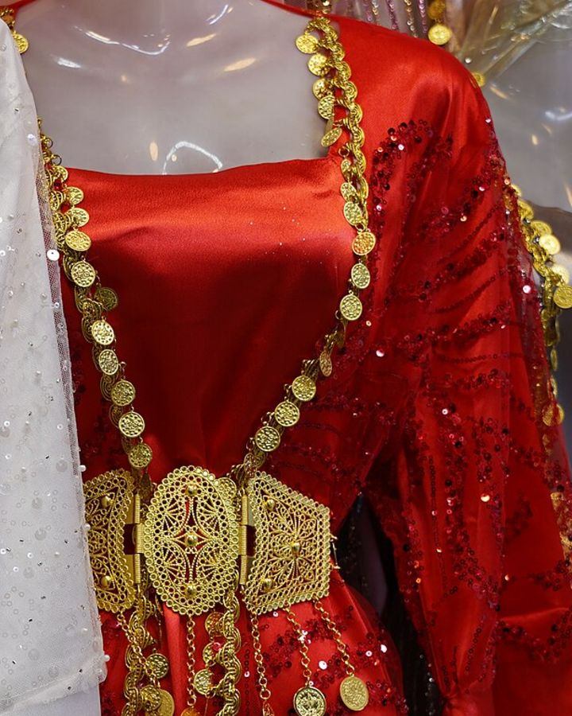

Kapak — Fotoğraf: ئاسۆ (Aso) · CC BY-SA 4.0 · Kaynaklar
Kapak — Fotoğraf: ئاسۆ (Aso) · CC BY-SA 4.0 · Kaynaklar
Bir gece giyilen kadife kirasfistan, yanlış yıkandığında havı yatar, saten astarı sararır, payetleri tek tek dökülür. Oysa bu elbiselerin çoğu, doğru kurallarla on yıl boyunca ilk günkü görünümünü koruyabiliyor. Bu rehberde kumaş türüne göre yıkama yöntemini, su sıcaklığını, deterjan seçimini, ütü ısılarını, sık karşılaşılan lekelerin çıkarılmasını, kurutma ve saklama yöntemlerini adım adım bulacaksınız. Ayrıca hangi durumda kendiniz yıkamayı bırakıp kuru temizlemeye götürmeniz gerektiğini de net kriterlerle anlatıyoruz.
Yıkamadan Önce Yapılacak 5 Dakikalık Kontrol
Elbiseyi suya sokmadan önceki birkaç dakika, yıkamanın kendisinden daha belirleyicidir. Aşağıdaki sırayı her yıkamadan önce uygulayın:
- Bakım etiketini okuyun. İçinde çapraz çizilmiş bir leğen varsa elbise suyla yıkanmaz; daire içinde "P" harfi varsa kuru temizlemeye uygundur.
- Renk haslığını test edin. Astarın iç dikişinden görünmeyen bir noktayı ıslak beyaz bir bezle 10 saniye ovun. Beze renk geçtiyse elbise yalnızca kuru temizlemeye gider.
- Süslemeleri kontrol edin. Gevşemiş payet, sallanan düğme, açılmış boncuk dikişi varsa yıkamadan önce onarın; su içinde hepsi kopar.
- Fermuar ve kopçaları kapatın, kemer ve broş gibi çıkarılabilir parçaları ayırın.
- Elbiseyi ters yüz çevirin. Bu tek hareket, sürtünmeden kaynaklanan matlaşmayı belirgin biçimde azaltır.
Kumaş Türüne Göre Yıkama Tablosu
Aşağıdaki tablo, yöresel elbiselerde en sık kullanılan beş kumaş için temel bakım kurallarını özetliyor. Etiket ile tablo çelişirse her zaman etiketi esas alın.
| Kumaş | Yıkama | Su sıcaklığı | Ütü | Kurutma |
|---|---|---|---|---|
| Kadife (pamuk/viskon) | Elde, ovmadan; makinede yalnızca file torbada | 30 °C | Doğrudan ütü yok; buharlı askı veya ters yüz 110 °C, havlu üzerinde | Gölgede, havlu üzerinde düz serilerek |
| Saten (polyester) | Elde veya hassas program, 400–600 devir | 30 °C | Ters yüz, 110–150 °C, araya ince bez | Askıda, gölgede; asla sıkmadan |
| Şifon | Sadece elde, sıkmadan | 20–30 °C | Ters yüz, 110 °C, buharsız | Havlu arasında bastırıp gölgede düz |
| Payetli / pullu | Elde, bastırarak; tercihen sadece lekeli bölge | 20 °C (soğuk) | Ütü yok; ters yüz, bez arayla 100 °C'yi geçmeden | Düz zeminde, kesinlikle askıda değil |
| Jakar / ağır dokuma | Kuru temizleme önerilir; zorunlusa elde | 30 °C | Ters yüz, 150 °C, buharlı | Geniş omuzlu askıda, gölgede |
Kadife Kirasfistan Bakımı
Kadifenin sorunu kir değil, hav yönüdür. Elyaflar bastırıldığında yatar ve o bölge daha açık renk görünür. Bu yüzden kadifeyi ovmak, sıkmak ve burmak yasaktır. Yıkarken elbiseyi ılık suda 10–15 dakika bekletin, yalnızca hafifçe bastırarak suyu dolaştırın. Durulamadan sonra suyu almak için elbiseyi büyük bir havluya sarıp rulo yapın ve rulonun üzerine avuç içinizle bastırın.
Kadifede oluşan yatık izleri çoğunlukla buharla düzelir: elbiseyi askıya asın, buharlı ütüyü kumaşa değdirmeden 15–20 cm mesafeden geçirin, ardından havı yumuşak bir kıl fırçayla tek yönde tarayın. Küçük lekeler için ütü masasına ters çevrilmiş bir havlu serip elbiseyi havın üzerine yüzü aşağı bakacak şekilde koymak, hav ezilmesini önler.
Saten ve Şifonda Sıkma Yasağı
Saten, parlaklığını yüzeydeki uzun atlama ipliklerinden alır. Bu iplikler sürtünmeyle çizilir ve kumaş matlaşır; bu hasar geri döndürülemez. Bu yüzden saten ve şifon elbiseleri asla makinede yüksek devirde sıkmayın, fırçayla ovmayın, klor içeren çamaşır suyuyla temas ettirmeyin.
Şifonda ise asıl risk deformasyondur: ıslak şifon kendi ağırlığıyla uzar. Islakken askıya asılan bir şifon eteğin boyu birkaç santim uzayabilir. Bu nedenle şifonu havlu arasında nemi alındıktan sonra düz zeminde kurutun, ancak tamamen kuruduktan sonra askıya alın.
Payetli ve Pullu Elbiselerde Dökülmeyi Önlemek
Payetler çoğunlukla zincir dikişle tutturulur; bu dikişte tek bir ilmek koptuğunda sıra hâlinde çözülme başlar. Bunu önlemek için:
- Yıkamadan önce elbiseyi ters çevirip file çamaşır torbasına koyun; payetler kendi kendine sürtünmesin diye elbiseyi gevşek katlayın.
- Su sıcaklığını 20 °C'yi geçirmeyin. Sıcak su, payetleri tutan yapıştırıcıyı ve pul kaplamasını bozabilir.
- Mümkünse tüm elbiseyi yıkamayın; yalnızca lekeli bölgeyi nemli bezle noktasal temizleyin. Payetli elbiselerde en uzun ömrü veren yöntem budur.
- Yeni bir kopma fark ettiğinizde, kopan ilmeğin iki yanındaki payeti ince ipek iplikle tek tek sabitleyin. Bu 10 dakikalık onarım, sıranın tamamını kurtarır.
- Elbiseyi kurutma makinesine hiçbir koşulda koymayın; tambur dönüşü payetleri ve pulları kırar.
Elde Yıkama: Adım Adım
- Küveti veya geniş bir leğeni 20–30 °C suyla doldurun. Elinizi soktuğunuzda ne sıcak ne soğuk hissetmelisiniz.
- 10 litre suya bir çorba kaşığı (yaklaşık 15 ml) sıvı hassas deterjan ekleyin ve suda tamamen çözün. Deterjanı doğrudan kumaşa dökmeyin.
- Ters yüz çevrilmiş elbiseyi suya yatırın, 10–15 dakika bekletin. Kadife ve payetlide bu süreyi 10 dakikayı geçirmeyin.
- Ovmadan, yalnızca elbiseyi suyun içinde yukarı aşağı bastırarak 1–2 dakika hareket ettirin. Yaka ve koltuk altı gibi bölgelere parmak uçlarıyla hafifçe masaj yapın.
- Kirli suyu boşaltın, temiz soğuk suyla en az iki kez durulayın. Su berraklaşana kadar devam edin; kalan deterjan kumaşı sertleştirir ve sararmaya yol açar.
- Elbiseyi sıkmadan kaldırın, kuru bir havlunun üzerine yayın, havluyla birlikte rulo yapıp bastırarak suyunu alın. Gerekirse ikinci kuru havluyla tekrarlayın.
- Kumaş türüne göre düz zeminde veya geniş omuzlu askıda, gölgede kurutun.
Makinede Yıkamak Zorundaysanız
Etiket izin veriyorsa ve elbisede payet, boncuk, el işi süsleme yoksa makine kullanılabilir. Bu durumda "yünlü", "ipek" veya "elde yıkama" programını seçin, sıcaklığı 30 °C'ye, sıkma devrini 400 devire ayarlayın. Elbiseyi mutlaka file torbaya koyun ve makineyi yarı dolu çalıştırın; sıkışık tambur, sürtünmeyi artırır. Yumuşatıcı kullanmayın: silikon esaslı yumuşatıcılar kadifenin havını yapıştırır ve satenin parlaklığını azaltır. Yumuşaklık için son durulama suyuna 10 litreye yarım çay bardağı beyaz sirke ekleyebilirsiniz; sirke kokusu kuruduğunda kaybolur.
Emin olmadığınız her durumda daha az müdahale eden yöntemi seçin. Bir elbiseyi az yıkamak onarılabilir, yanlış yıkamak çoğu zaman onarılamaz.
Kurutma: Kurutma Makinesi ve Güneş Neden Olmaz
Kurutma makinesi hem ısı hem de mekanik darbe üretir. Isı, saten ve şifonun polyester elyafını büzüştürür; darbe, payet ve boncuk dikişlerini koparır; kadifenin havını kalıcı olarak ezer. Bu yüzden yöresel elbiselerde kurutma makinesi kullanılmaz.
Doğrudan güneş de benzer şekilde zararlıdır. Ultraviyole ışık, özellikle kırmızı, bordo ve mor tonlardaki boyaları soldurur; birkaç saatlik doğrudan güneş bile omuz ve kol üstünde renk farkı bırakabilir. Elbiseyi gölgede, hava akımı olan bir yerde, mümkünse yatay serili olarak kurutun. Ağır kadife ve jakar elbiseleri askıda kurutacaksanız, omuzların bozulmaması için geniş ve dolgulu askı kullanın.
Ütüleme: Isı Dereceleri ve Güvenli Yöntem
Ütüde temel kural üç maddede özetlenebilir: her zaman ters yüz, her zaman en düşük ısıyla başla, her zaman araya bez koy. İnce pamuklu bir mendil veya tülbent, ütü tabanı ile kumaş arasındaki parlama izini önler.
Ütü üzerindeki nokta işaretleri yaklaşık şu değerlere karşılık gelir: tek nokta 110 °C, iki nokta 150 °C, üç nokta 200 °C. Saten ve şifon için tek nokta, polyester karışımlı jakar için iki nokta yeterlidir. Kadifeye ütü tabanı değmemelidir; bunun yerine buharlı askı kullanın veya elbiseyi banyoda sıcak duş buharına 10 dakika maruz bırakın, kırışıklıkların büyük kısmı kendiliğinden açılır. Payetli bölgelerin üzerinden ütü geçirmeyin; payet erir ve ütü tabanına yapışır.
Leke Çıkarma Rehberi
Lekede en kritik değişken zamandır: ilk 30 dakika içinde müdahale edilen lekelerin büyük çoğunluğu tamamen çıkar. Lekeyi her zaman dıştan içe doğru, bastırarak silin; ovmak lekeyi büyütür ve kumaşı tüylendirir.
- Yağ (yemek, zeytinyağı): Lekenin üzerine mısır nişastası veya talk pudrası dökün, 30 dakika bekletin, yumuşak fırçayla temizleyin. Kalıntı varsa bulaşık deterjanının bir damlasını ılık suda seyreltip pamukla uygulayın.
- Ruj ve fondöten: Misel su veya izopropil alkolü pamuk çubuğa emdirip lekenin dış çeperinden başlayarak içe doğru ilerleyin. Pamuğu kirlendikçe değiştirin.
- Ter ve deodorant izi: 1 ölçü karbonat ile 2 ölçü suyu macun kıvamında karıştırın, lekeye sürüp 30 dakika bekletin, soğuk suyla durulayın. Sararmış koltuk altları için karbonat macununa birkaç damla beyaz sirke ekleyebilirsiniz.
- Meşrubat, çay, meyve suyu: Önce bol soğuk suyla arkadan yıkayın. Sıcak su şeker ve tanenleri kumaşa sabitler. İz kalırsa 1 ölçü beyaz sirke + 3 ölçü su karışımını pamukla uygulayın.
- Mum ve balmumu: Kalıntıyı buzla sertleştirip kaşık sırtıyla kaldırın, kalan izin üzerine kâğıt havlu koyup düşük ısıda ütüleyin.
Payetli, boncuklu veya renk haslığı düşük kumaşlarda hiçbir leke çıkarıcıyı önce gizli bir noktada denemeden kullanmayın.
Saklama: Askı, Kılıf ve Katlama
Elbiselerin çoğu giyilirken değil, dolapta bozulur. Doğru saklamanın dört kuralı var:
- Askı seçimi: Tel askı kullanmayın; omuzda kalıcı çıkıntı bırakır. Geniş omuzlu ahşap veya süngerli kumaş askı tercih edin. Ağır payetli elbiseleri asmak yerine katlayın; kendi ağırlıkları omuz dikişini yırtabilir.
- Kılıf: Naylon ve plastik kılıflar nem hapsedip küf ve sararmaya yol açar. Nefes alan pamuklu bez kılıf kullanın. Kılıfın rengi açık olsun, boya geçişi riski azalır.
- Katlama: Katlarken kat yerlerine asitsiz ince kâğıt veya temiz pamuklu bez yerleştirin; böylece kalıcı kat izi oluşmaz. Yılda bir kez elbiseyi açıp farklı yerden katlamak, izlerin sabitlenmesini önler.
- Koku ve böcek koruması: Naftalin hem güçlü koku bırakır hem de kapalı alanda solunması sakıncalıdır. Yerine sedir ağacı blokları, kuru lavanta keseleri veya defne yaprağı kullanın; bunları kumaşa doğrudan değdirmeyin. Nemli dolaplarda küçük bir silika jel paketi işe yarar.
Elbisenin yanında saklanan puşi ve aksesuarları ayrı keselerde tutun; metal tokalar ve zincirler kumaşa sürtünüp çekme yapabilir. Erkek giyiminde şal û şepik takımları için de aynı nefes alan kılıf kuralı geçerlidir.
Kuru Temizlemeye Ne Zaman Göndermeli?
Şu durumlardan herhangi biri varsa evde yıkamayı denemeyin:
- Etikette çapraz çizilmiş leğen veya daire içinde "P" işareti bulunuyorsa,
- Elbisede el işi sim, tel kırma, ağır boncuk veya yapıştırma taş varsa,
- Renk haslığı testinde beze boya geçtiyse,
- Astar ile dış kumaş farklı türdeyse (örneğin ipek üzerine viskon astar), çünkü ikisi farklı oranda çeker,
- Leke 24 saatten eskiyse veya daha önce yanlış bir müdahaleyle sabitlenmişse.
Kuru temizlemeciye elbiseyi teslim ederken lekenin ne olduğunu ve ne kadar zaman önce oluştuğunu mutlaka söyleyin; kullanılacak çözücü buna göre değişir. Payetli parçalar için "hassas işlem" talebinizi yazılı olarak belirtmenizi öneririz. Bu tür elbiselerin genellikle sezonda bir kez, yoğun kullanımda en fazla iki kez kuru temizlemeye gönderilmesi yeterlidir; her temizleme kumaşı bir miktar yorar.
Kumaş, model ve beden seçimiyle ilgili sorularınız için sıkça sorulan sorular sayfasına, diğer bakım ve kombin yazıları için blog bölümüne göz atabilirsiniz.
Sıkça Sorulan Sorular
Kadife kirasfistan makinede yıkanabilir mi?
Etiket izin veriyorsa ters yüz çevrilmiş ve file torbaya konmuş kadife elbise, 30 °C'de hassas programda ve 400 devir sıkmayla yıkanabilir. Ancak elde yıkama havı çok daha iyi korur. Payet, boncuk veya el işi süsleme varsa makine kullanılmamalıdır.
Payetli elbise yıkanınca payetler dökülür mü?
Sıcak su, yüksek devirli sıkma ve kurutma makinesi payetleri tutan dikişi ve yapıştırıcıyı bozarak dökülmeye yol açar. En güvenli yöntem, tüm elbiseyi yıkamak yerine yalnızca lekeli bölgeyi 20 °C soğuk suyla noktasal temizlemektir. Yıkamadan önce gevşemiş payetleri ince iplikle sabitlemek de dökülmeyi önler.
Kirasfistan hangi sıcaklıkta ütülenir?
Ütüde tek nokta yaklaşık 110 °C, iki nokta 150 °C, üç nokta 200 °C anlamına gelir. Saten ve şifon için tek nokta, jakar için iki nokta yeterlidir. Elbiseyi her zaman ters yüz çevirin ve araya ince pamuklu bir bez koyun; kadifeye ütü tabanı değdirmeyin, bunun yerine buharlı askı kullanın.
Elbiseyi güneşte kurutmak zarar verir mi?
Evet. Doğrudan güneş ışığı özellikle kırmızı, bordo ve mor tonlardaki boyaları soldurur ve omuz bölgesinde renk farkı bırakabilir. Elbiseyi gölgede, hava akımı olan bir yerde kurutun; kadife, şifon ve payetli parçaları havlu üzerinde düz sererek kurutmak en güvenli yöntemdir.
Ter lekesi ve sararma nasıl çıkar?
1 ölçü karbonat ile 2 ölçü suyu macun kıvamında karıştırıp lekeye sürün ve 30 dakika bekletip soğuk suyla durulayın. İnatçı sararmalarda macuna birkaç damla beyaz sirke ekleyebilirsiniz. Sıcak su ve klorlu çamaşır suyu kullanmayın; ikisi de lekeyi kumaşa sabitler.
Yöresel elbise dolapta nasıl saklanmalı?
Nefes alan pamuklu bez kılıf kullanın, naylon kılıftan kaçının çünkü nem hapsedip küf ve sararmaya yol açar. Geniş omuzlu ahşap veya süngerli askı tercih edin; ağır payetli elbiseleri asmak yerine kat aralarına asitsiz kâğıt koyarak katlayın. Naftalin yerine sedir bloğu veya kuru lavanta kesesi kullanabilirsiniz.
Kültürden Kareler
